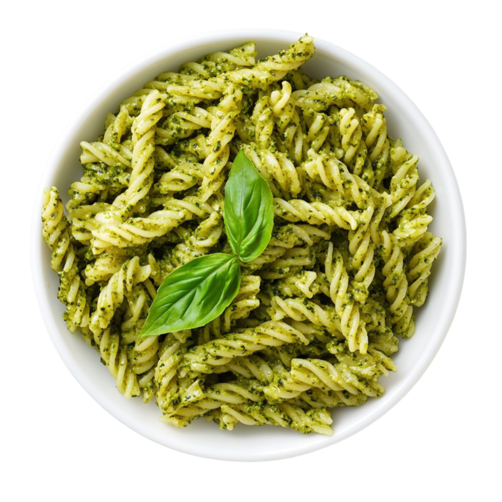

Pasta al pesto is a classic dish from Liguria, in northern Italy, known for its vibrant green sauce made from fresh basil, pine nuts, garlic, Parmesan, and extra virgin olive oil. The dish combines the fragrant, herbaceous flavors of the pesto with perfectly cooked pasta for a fresh and satisfying meal.
Traditionally, the sauce is prepared using a mortar and pestle to crush the basil leaves gently, releasing their aromatic oils. Modern adaptations often use a food processor, but the emphasis remains on freshness and balance of flavors. Typical pasta shapes for this dish include trofie, trenette, or spaghetti, which hold the sauce perfectly.